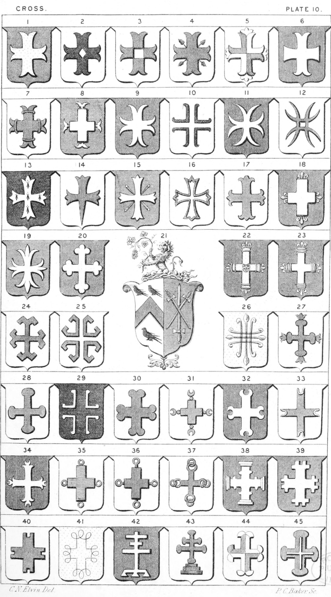

Plate 10.

Plate 10.
- Cross Moline, also termed Nyle, Anille, or Nelle
- Cross Moline pierced lozengy
- Cross Moline quarterly pierced
- Cross Moline angled with acorns, or acorned as each angle
- Cross Moline per cross, at each end at the centre of the extremities a leaf of three points
- Cross Pattee in fesse and moline in pale
- Cross Moline pomelled, or a cross moline pommette
- Cross Moline double-rebated
- Cross Moline anchored
- Cross Moline double-parted, voided flory, or a cross moline Sarcelled
- Cross Anchored, Anchore, or Anchory. Also termed a cross pattee double fitched, or double fitchee of all four
- Cross Double parted flory
- Cross Patonce
- Cross Patonce Fitchy
- Cross Patonce angled with passion nails
- Cross Patonce voided
- Cross Flory
- Cross Couped fleury,or Humetty flurty or florette
- Cross Flory triparted, properly a cross-flory
- Cross Bottonnee, or a cross Trefoil, or Treffle
- Arms Impaled, i.e., Baron and Femme. Elvin impaling Norton. See P. 8 and P. 9, fig. 21
- Cross of the Capitals, of four pillars flurty and a leopard's face issuant
- Cross Astragal, or Astrical with fleur- de-lis. Also termed a cross cornished flurt
- Cross Miller, or a cross mill-rind
- Cross Mill-rind voided and disjointed
- Cross Triparted flory
- Cross Pomelle, avelland, or cross pommelle flory
- Cross Pomelled, Pommelle, or Crowned-pomel or bourdonnee
- Cross Pomelle voided and removed
- Cross Double-pomelled
- Cross Pommelled and Crescented, also termed cross pommettee and crescente
- Cross Couped crescented, also termed cross-crescented, or crescenty
- Cross Ferrated, i.e. with horse-shoes at extremities
- Cross Double-parted and anchored, or a cross double-parted and crescented
- Cross Annulated, or a cross couped, at each end an annulet
- Cross Annulated, rebated
- Cross Annuly each fretted with a ring
- Cross Degraded, nowed
- Cross Crosslet, double-fitched (or fitchee) of all four rebated
- Cross Double-fitched (or fitchee) and rebated of all four
- Cross Entrailed
- Cross Patriarchal thrice crossed potent the foot lambeaux
- Cross Patriarchal pommettee upon three grieces
- Cross Quarterly quartered couped, ends sarcelled and reverted
- Cross Potent ends rounded, surmounted of a cross couped. It may be blazoned. Ar. a Cross Potent the ends rounded gu. voided per cross